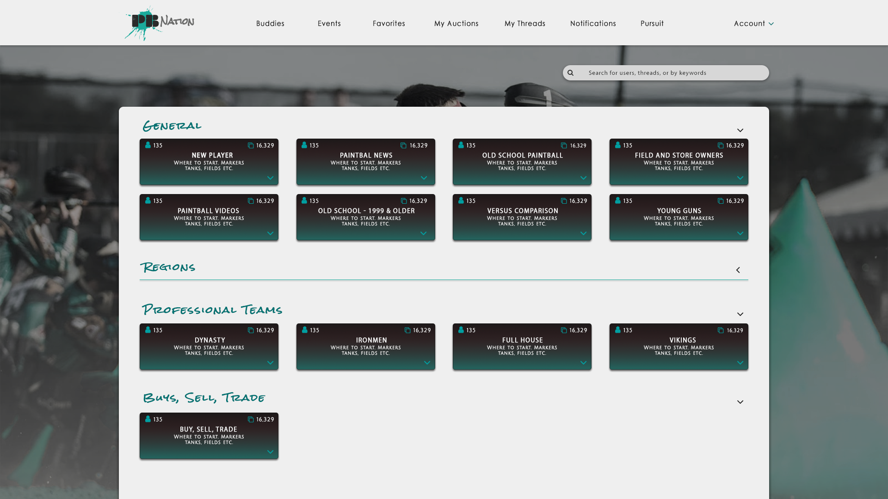

PBNation Case Study - about the project.
PbNation is a free english based forum known to have more user traffic than all other paintball media combined. Being user generated, the site offers field and store directory, product reviews, a market for buying, selling, and trading, a place to organize events, and a great place to share information, pictures and videos.
My Role
Being a solo project, I did everything from the user interviews, user stories, creating the persona’s, site mapping and flow charts, to iterating and testing of wireframes and mockups, all the way up to the prototype version. Oh, and I also did the rebranding of the logo.
Goals & Objective
Addressing user feedback from interviews, the primary goals of the redesign and rebrand were to:
- Focus on allowing users to find content faster; increasing user efficiency
- Allow users a better way to save, follow and favorite threads
- Visually and mentally, create a more comprehensive design layout
- Update the sites appearance with a more modern and clean look
- Give users a better option for buying, selling, and trading
- Give users a way to create events
The Research


After completing user interviews and noting key user stories, I delved into a more detailed analysis of the originals site functionality, usability, and efficiency. When you first visit the page, right away you can see how chaotic it looks. If you spend a little extra time on the site, you start to unravel quickly how poor the efficiency really is. With the primary element being forum experience, I invited three people ranging from very experienced, to some experience, to no experience at all to test exactly how well the site functioned. To demonstrate the inefficiency of the original site, one of the objectives during the assessment was to simply find your profile from the main forum page. Using time as measurement of efficiency, all three users were unable to find their profile within 40 seconds. Shocking! Among bad user feedback on the original site, one of the other large complications that hindered the users experience was the sites search system. Between data entries, there was a 30 second lockout. In other words, if a user typed in the wrong entry or made an error, you were waiting half a minute before a second chance.
Personas
Based around user stories, demographics, and pain points, as well as what I found to be the main uses of the site, I then put together multiple persona’s to help keep perspective of the different types of user's and their goals and interests while designing the initial wireframe. This included aspect of buying, selling, and trading as well as a way to organize events, follow and save threads, a more cohesive way to navigate the whole site as well as maintain some of the sites older features such as adding buddies.
Iteration & Design
Once the initial wireframes were built, I did a second round of testing using the same objectives and people to gauge the disparity between the original site and new design. Considering how shockingly difficult it was for user to find their profile, I made it appoint to fix that. With the testing, all three users were able to find their profile under 5 seconds. An increase of 800% to 1000% of efficiency, literally! The second round of testing also unraveled other smaller user pain points and other various hindrances that had been missed or not addressed which were then able to be corrected. This back and forth iterative process happened until I was left with the final design. Ultimately, I wanted to address every common users goal, functionality and pain point thoroughly and that the navigation was both visually and mentally cohesive.
Preference Testing
Once the sites functionality and efficiency were addressed, I focused on running preference tests for visual design. Some of the sites bigger visual issues were the abundance of hypertext, a subpar cookie-crumb navigation, and the color palette. As a result, there was no clear navigation. Nothing stood out or seemed to show any signs of importance or differentiation. It was boring. The goal for this was to maintain a clean and professional look but add a color and character. It was important to create clear navigational paths, but also represent the world of paintball.
The Results
Successfully implementing an improved, more functional, and more efficient site, I believe would make a positive change for users on the site. It brings together some of the sites older elements with some newer ones but also allows the user to engage with the content more by reducing wait time, being lost in hypertext, but at the same time improves visitor retention time.